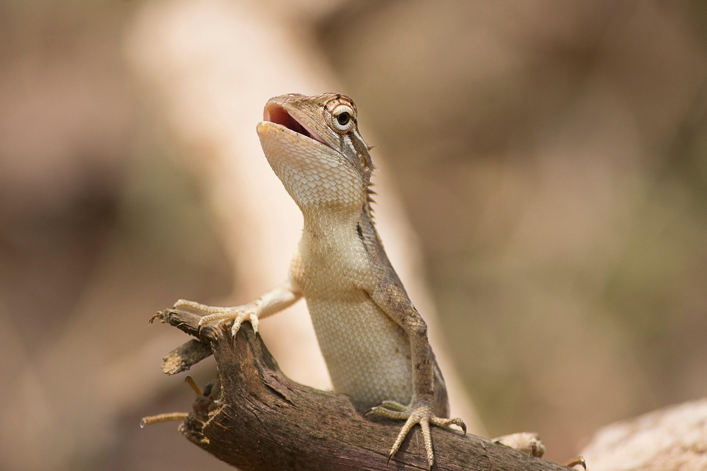

(Lacertilia)
El lagarto es un reptil de cuerpo alargado, conocido por su capacidad de adaptarse a diversos ambientes y por su rapidez. Históricamente ha sido un animal presente en mitos y culturas, y cumple un papel importante en los ecosistemas al controlar poblaciones de insectos y otros pequeños animales. Gracias a su agilidad y sentidos desarrollados, los lagartos pueden detectar presas y depredadores, escapar de amenazas y regular su temperatura mediante el sol. Dependiendo de la especie, su esperanza de vida oscila entre 5 y 20 años, necesitando hábitats adecuados, refugios seguros y alimentación equilibrada. Los lagartos presentan gran diversidad de tamaños, colores y hábitos, desde especies terrestres hasta arborícolas, y muestran comportamientos interesantes como la autotomía de la cola para escapar de depredadores.
Características